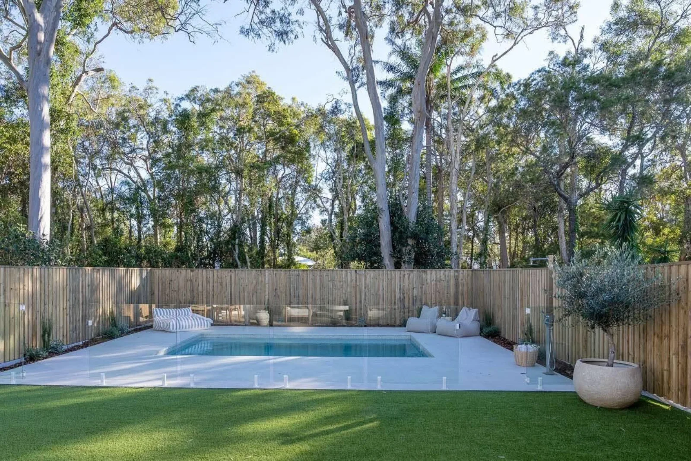
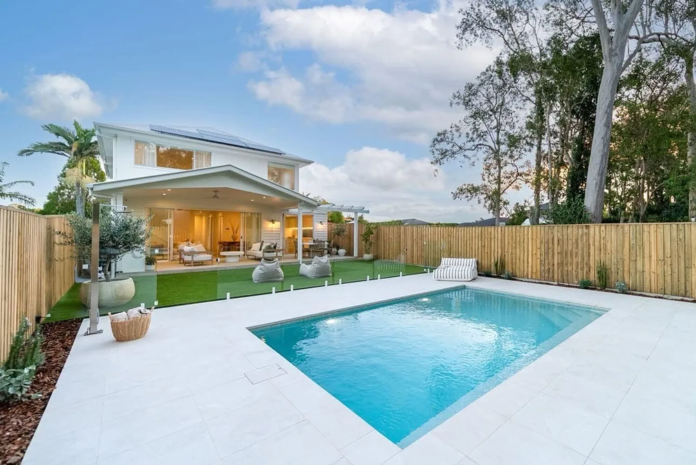
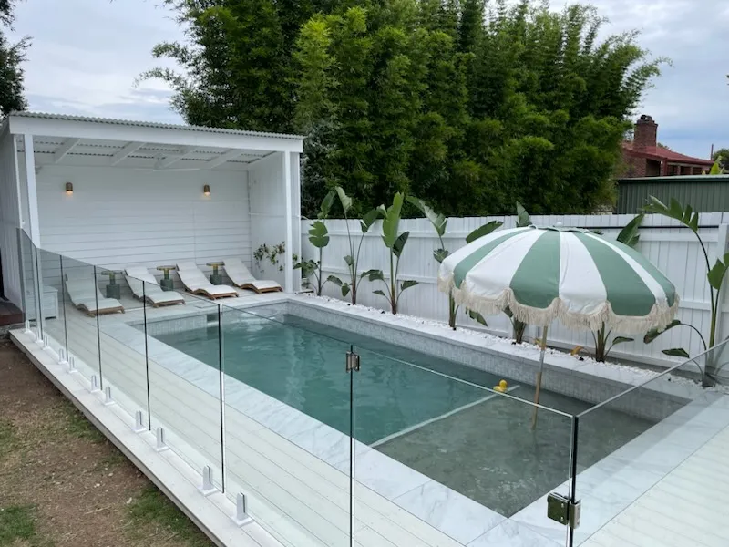
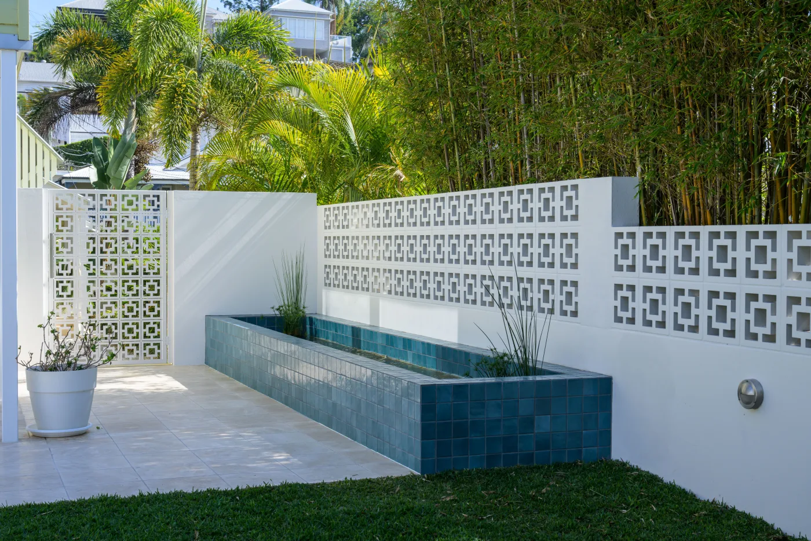

Bayside blocks tend to be generous, often with established gum trees and sandy or variable soils. We place the pool to keep the trees healthy and the leaf litter manageable, engineer the shell for the ground it sits in, and pick fencing hardware and finishes that cope with salt air. Then the same crew lays the paving, fencing, lawn and garden so it all lands together.

Designed from scratch for your block, engineered for the ground it sits in.
Custom pools
Genuine Plungie pools, craned in and finished with fencing and landscaping.
Plunge pools
Pool renovations, fencing, decks, gardens and lighting by the same crew.
LandscapingA light-filled pool with pale paving, frameless glass, natural timber fencing, lawn and potted olives under towering gums.
See the Ormiston projectSince having our property landscaped by Bespoke, we've spent so much more time outside. The concept was well thought out and we couldn't be happier with the way the whole team handled themselves.
Yes. We build across Redland City and Brisbane's bayside suburbs, including Ormiston and Gumdale, and handle the approvals and certification for you.
Usually. We position the pool to protect root zones and keep leaf litter under control, and we check whether any trees are protected before we design. Our Ormiston project sits right beneath established gums.
It can. Near the bay we spec fencing hardware and finishes that hold up in coastal conditions, so frameless glass stays looking good for years.
Yes. Lawn, gardens, retaining, decks, irrigation and lighting are all part of what we do. See pool landscaping.
We also build across Brisbane northside & Moreton Bay · Brisbane inner & eastern suburbs
Send us your address and a rough idea of what you want. We'll come back with what's possible.
Start your project